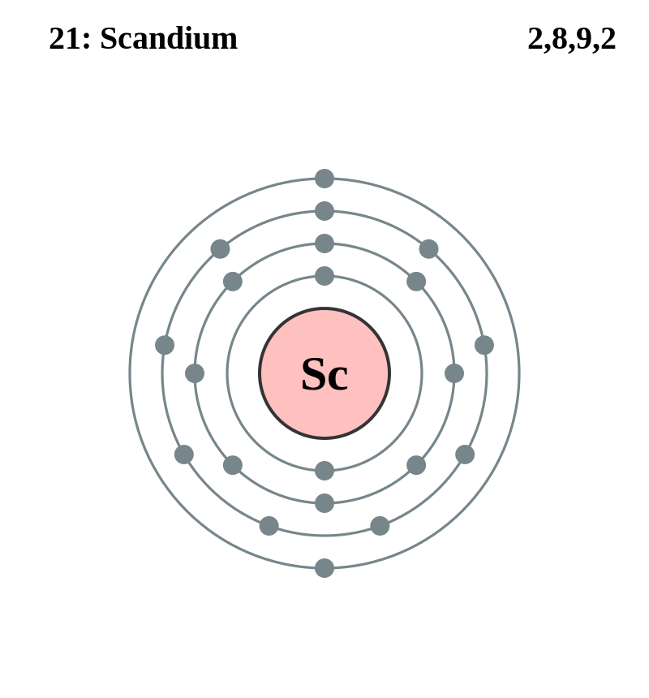

Basic Information about the element
Basic Information about the element
Name: Scandium
Symbol: Sc
Atomic Number: 21

1s2 2s2 2p6 3s2 3p6 3d1 4s2
The chemical element scandium is classed as a transition metal and rare earth.
It was discovered in 1879 by Lars F. Nilson.
| Number of Protons/Electrons: | 21 |
| Number of Neutrons: | 24 |
| Atomic Mass: | 44.95591 amu |
| Melting Point: | 1539.0 °C |
| Boiling Point: | 2832.0 °C |
| Classification: | Transition Metal |
| Uses: | Scandium is used in aluminum-scandium alloys for aerospace industry components and for sports equipment such as bicycle frames, fishing rods, golf iron shafts and baseball bats. |